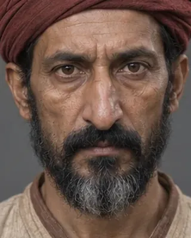

1765 · Ahom commander

Led the 1765 army sent to help Manipur against the Burmese; the jungle route defeated it and it became known as the War of the Creepers.
Record confidence: medium.
Open interactive profile
1765–1768